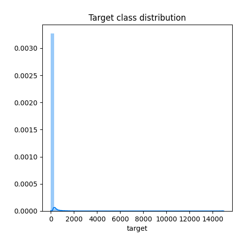
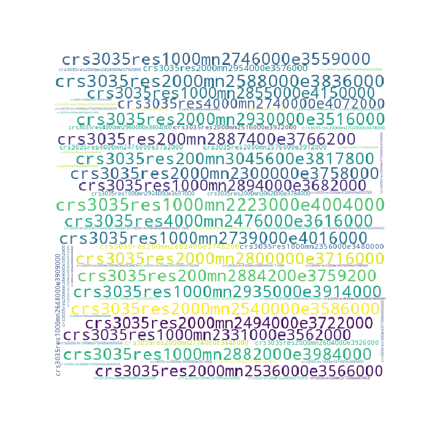
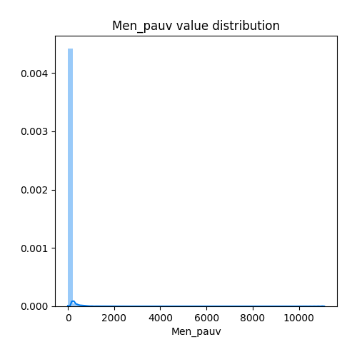
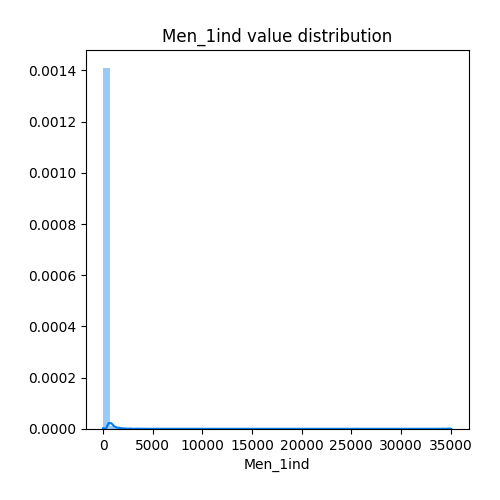
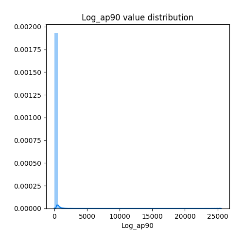
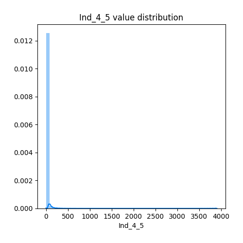
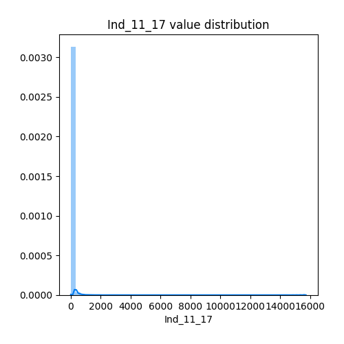
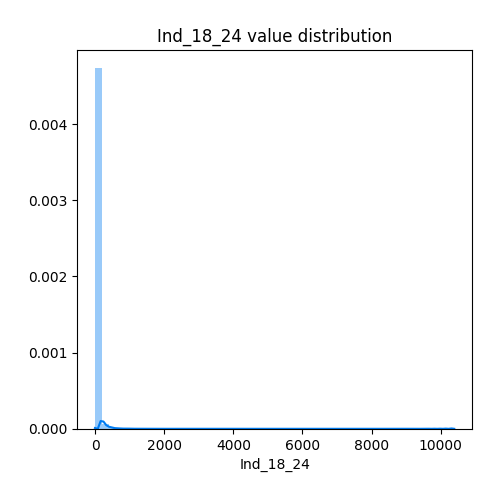
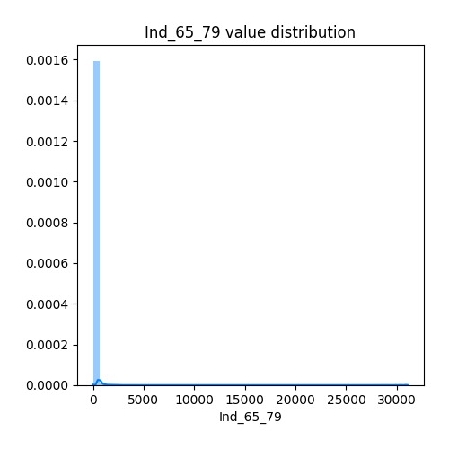
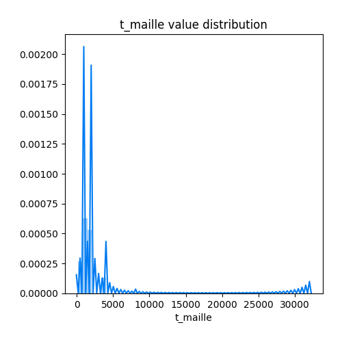

Exploratory Data Analysis
<< Go back
Feature : target
- Feature type : continous
- Missing : 0.0%
- Unique : 2046
- Count :107190.0
- Mean :30.021256647075283
- Std :163.79550034259555
- Min :0.0
- 25%th Percentile : 0.0
- 50%th Percentile : 0.0
- 75%th Percentile : 4.9
- Max :14951.8

Feature : Id_carr_n
- Feature type : text
- Missing : 0.0%
- Unique : 107190
- Count :107190
- Unique :107190
- Top :CRS3035RES2000mN2950000E3870000
- Freq :1

Feature : Ind
- Feature type : continous
- Missing : 0.0%
- Unique : 6986
- Count :107190.0
- Mean :439.4705056441832
- Std :1351.3627939237567
- Min :12.0
- 25%th Percentile : 71.5
- 50%th Percentile : 155.0
- 75%th Percentile : 381.5
- Max :191932.5

Feature : Men
- Feature type : continous
- Missing : 0.0%
- Unique : 8209
- Count :107190.0
- Mean :189.60562086015486
- Std :611.24398096379
- Min :10.5
- 25%th Percentile : 29.4
- 50%th Percentile : 64.0
- 75%th Percentile : 161.9
- Max :89976.8

Feature : Men_pauv
- Feature type : continous
- Missing : 0.0%
- Unique : 2615
- Count :107190.0
- Mean :26.562544080604532
- Std :100.61583931725896
- Min :0.0
- 25%th Percentile : 3.0
- 50%th Percentile : 7.0
- 75%th Percentile : 18.1
- Max :11101.9

Feature : Men_1ind
- Feature type : continous
- Missing : 0.0%
- Unique : 4380
- Count :107190.0
- Mean :63.813320272413485
- Std :243.00063672305487
- Min :0.0
- 25%th Percentile : 7.0
- 50%th Percentile : 16.1
- 75%th Percentile : 47.0
- Max :35064.5

Feature : Men_5ind
- Feature type : continous
- Missing : 0.0%
- Unique : 1654
- Count :107190.0
- Mean :13.535938986845789
- Std :45.326913134562716
- Min :0.0
- 25%th Percentile : 1.9
- 50%th Percentile : 4.1
- 75%th Percentile : 11.0
- Max :4819.3

Feature : Men_prop
- Feature type : continous
- Missing : 0.0%
- Unique : 6020
- Count :107190.0
- Mean :111.557513760612
- Std :325.30697796225786
- Min :0.0
- 25%th Percentile : 22.1
- 50%th Percentile : 46.2
- 75%th Percentile : 106.0
- Max :57953.4

Feature : Men_fmp
- Feature type : continous
- Missing : 0.0%
- Unique : 2151
- Count :107190.0
- Mean :20.062155984700066
- Std :71.62882217964473
- Min :0.0
- 25%th Percentile : 2.0
- 50%th Percentile : 5.0
- 75%th Percentile : 15.0
- Max :9093.1

Feature : Ind_snv
- Feature type : continous
- Missing : 0.0%
- Unique : 107114
- Count :107190.0
- Mean :9898530.661196006
- Std :30392301.40076306
- Min :175061.4
- 25%th Percentile : 1548310.9000000001
- 50%th Percentile : 3440988.0
- 75%th Percentile : 8657147.075
- Max :4203146541.0

Feature : Men_surf
- Feature type : continous
- Missing : 0.0%
- Unique : 64395
- Count :107190.0
- Mean :16488.192348166805
- Std :49236.76472160966
- Min :339.9
- 25%th Percentile : 3159.1
- 50%th Percentile : 6507.05
- 75%th Percentile : 15042.85
- Max :8228394.1

Feature : Men_coll
- Feature type : continous
- Missing : 0.0%
- Unique : 4807
- Count :107190.0
- Mean :81.1451142830488
- Std :402.92792729469716
- Min :0.0
- 25%th Percentile : 0.0
- 50%th Percentile : 2.7
- 75%th Percentile : 27.0
- Max :35958.0

Feature : Men_mais
- Feature type : continous
- Missing : 0.0%
- Unique : 6139
- Count :107190.0
- Mean :108.46050657710609
- Std :296.6985695064199
- Min :0.0
- 25%th Percentile : 22.7
- 50%th Percentile : 45.9
- 75%th Percentile : 107.1
- Max :56887.7

Feature : Log_av45
- Feature type : continous
- Missing : 0.0%
- Unique : 4066
- Count :107190.0
- Mean :52.895020990764074
- Std :169.8770255997866
- Min :0.0
- 25%th Percentile : 9.0
- 50%th Percentile : 19.8
- 75%th Percentile : 45.0
- Max :13630.9

Feature : Log_45_70
- Feature type : continous
- Missing : 0.0%
- Unique : 3149
- Count :107190.0
- Mean :31.590920794850263
- Std :157.56027873092765
- Min :0.0
- 25%th Percentile : 1.0
- 50%th Percentile : 4.0
- 75%th Percentile : 15.0
- Max :24177.4

Feature : Log_70_90
- Feature type : continous
- Missing : 0.0%
- Unique : 4134
- Count :107190.0
- Mean :49.014724321298615
- Std :186.02167607792967
- Min :0.0
- 25%th Percentile : 4.1
- 50%th Percentile : 11.9
- 75%th Percentile : 36.4
- Max :30639.3

Feature : Log_ap90
- Feature type : continous
- Missing : 0.0%
- Unique : 4410
- Count :107190.0
- Mean :55.61113256833659
- Std :191.9050579380712
- Min :0.0
- 25%th Percentile : 5.0
- 50%th Percentile : 14.2
- 75%th Percentile : 46.0
- Max :25544.7

Feature : Ind_0_3
- Feature type : continous
- Missing : 0.0%
- Unique : 2653
- Count :107190.0
- Mean :20.64468607146189
- Std :66.41797120868992
- Min :0.0
- 25%th Percentile : 2.1
- 50%th Percentile : 6.1
- 75%th Percentile : 17.0
- Max :7172.3

Feature : Ind_4_5
- Feature type : continous
- Missing : 0.0%
- Unique : 1733
- Count :107190.0
- Mean :10.99895699225674
- Std :34.38793573088765
- Min :0.0
- 25%th Percentile : 1.0
- 50%th Percentile : 3.6
- 75%th Percentile : 9.6
- Max :3904.5

Feature : Ind_6_10
- Feature type : continous
- Missing : 0.0%
- Unique : 3130
- Count :107190.0
- Mean :27.59822837951302
- Std :83.74041697598103
- Min :0.0
- 25%th Percentile : 3.9
- 50%th Percentile : 9.1
- 75%th Percentile : 24.0
- Max :10300.4

Feature : Ind_11_17
- Feature type : continous
- Missing : 0.0%
- Unique : 3854
- Count :107190.0
- Mean :38.16180427278664
- Std :114.9551733248981
- Min :0.0
- 25%th Percentile : 5.8
- 50%th Percentile : 13.2
- 75%th Percentile : 33.5
- Max :15722.7

Feature : Ind_18_24
- Feature type : continous
- Missing : 0.0%
- Unique : 2959
- Count :107190.0
- Mean :24.4836719843269
- Std :79.38878911845906
- Min :0.0
- 25%th Percentile : 3.0
- 50%th Percentile : 7.9
- 75%th Percentile : 20.5
- Max :10387.3

Feature : Ind_25_39
- Feature type : continous
- Missing : 0.0%
- Unique : 5346
- Count :107190.0
- Mean :80.6208125758
- Std :260.3205701298878
- Min :0.0
- 25%th Percentile : 10.1
- 50%th Percentile : 24.8
- 75%th Percentile : 67.0
- Max :29667.6

Feature : Ind_40_54
- Feature type : continous
- Missing : 0.0%
- Unique : 5620
- Count :107190.0
- Mean :89.72788786267377
- Std :270.53186518859985
- Min :0.0
- 25%th Percentile : 14.9
- 50%th Percentile : 32.9
- 75%th Percentile : 79.3
- Max :38211.6

Feature : Ind_55_64
- Feature type : continous
- Missing : 0.0%
- Unique : 4060
- Count :107190.0
- Mean :55.50638025935255
- Std :171.4354821415151
- Min :0.0
- 25%th Percentile : 10.0
- 50%th Percentile : 21.1
- 75%th Percentile : 49.0
- Max :27065.9

Feature : Ind_65_79
- Feature type : continous
- Missing : 0.0%
- Unique : 4191
- Count :107190.0
- Mean :57.698016606026684
- Std :189.5149248044125
- Min :0.0
- 25%th Percentile : 10.0
- 50%th Percentile : 21.0
- 75%th Percentile : 49.9
- Max :31131.2

Feature : Ind_80p
- Feature type : continous
- Missing : 0.0%
- Unique : 2457
- Count :107190.0
- Mean :24.225630189383335
- Std :84.52040955345184
- Min :0.0
- 25%th Percentile : 3.8
- 50%th Percentile : 8.1
- 75%th Percentile : 20.0
- Max :13562.5

Feature : I_pauv
- Feature type : discrete
- Missing : 0.0%
- Unique : 4
- Count :107190.0
- Mean :0.0003265229965481855
- Std :0.029768747958380276
- Min :0.0
- 25%th Percentile : 0.0
- 50%th Percentile : 0.0
- 75%th Percentile : 0.0
- Max :8.0

Feature : t_maille
- Feature type : discrete
- Missing : 0.0%
- Unique : 7
- Count :107190.0
- Mean :1509.9822744659016
- Std :1226.8778497817536
- Min :200.0
- 25%th Percentile : 1000.0
- 50%th Percentile : 1000.0
- 75%th Percentile : 2000.0
- Max :32000.0

<< Go back